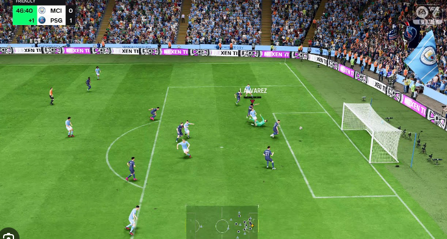
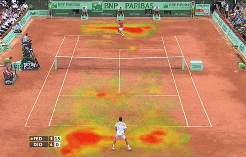
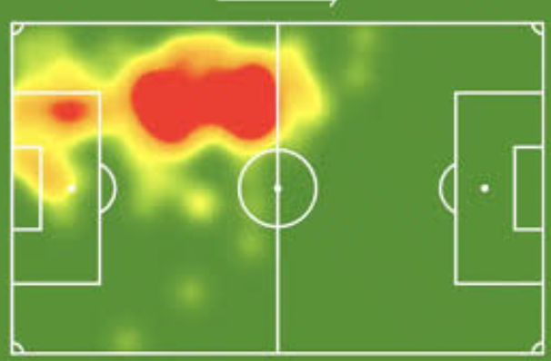
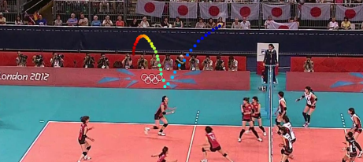
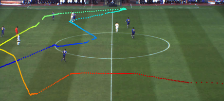
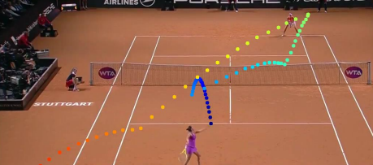

SubraSports.
Welcome to the new generation of sports viewing. Analyze and enjoy them like never before, using the power of AI, computer vision, and code.
About Subra Sports
SubraSportsis the name of this project. The name comes from the tale of Lord Subrahmanya and Ganesha where, because Lord Ganesha had a better understanding of the environment surrounding a game his parents posed, he won over Lord Subrahmanya. If Lord Subrahmanya had better tools to analyze the game, he would’ve won; putting some wordplay onto his name and the idea of Sports (the intended use case for this system), we get SubraSports. The color scheme comes from Lord Subrahmaya's animal, the peacock. This program is an advanced sports analysis tool designed for my Senior STEM Project. This system utilizes computer vision to analyze soccer games and other sports by providing insightful data such as player velocity, ball velocity, and ball trajectories, giving coaches and analysts a new way to understand game dynamics. Beyond that, it also offer a lightweight overlay designed for live streaming to enhance the casual sports viewer experience.
------------------------------------------------------------------------------------------------------------
This project strives to create an open-source, lightweight, and cheap way for coaches to analyze the game footage of their players. The end product will be a user-friendly program with a dedicated GUI for coaches/broadcasters to input either game or live footage for post-game or live analysis. This technology is targeted for the High School setting where not all school districts have the means to spend a massive amount of money on their sports teams for game analysis/coaching and multiple coaches. This means that there is a large opportunity discrepancy between schools who have funding vs schools who don’t– this project aims to help curb that by providing a free, open source program to expedite the game footage review process. Beyond that, to ensure that short form content with colorful displays don’t ruin game viewing retention, the program offers a visually appealing yet colorful display to entice the younger generation to watch sports.
------------------------------------------------------------------------------------------------------------
Conceptually, this project is inspired by the videogames such as Madden NFL, FIFA, NBA2k and other sports videogames. The idea was to gamify real world sports, similar to how the videogames approach it. The goal was to create similar overlays onto real game footage and provide similar match statistics that these videogames provide, giving coaches deeper insight into their players performance and viewers a more appealing and appeasing watching experience.
Example of a Videogame Overlay [FIFA]:
Examples of Heatmap Generation for Coach Analysis:
 Examples of Ball Tracking across Various Sports:
  Key Features
Player Velocity Tracking
Track and analyze player movement and velocity throughout the game. This includes instatenous velocity and total distance ran.
Ball Trajectory Analysis
Get real-time insights into ball paths, speeds, and other dynamics.
Team Performance Insights
Analyze overall team performance with advanced metrics such as heatmaps, team ball control %, and live player statisitcs.
Custom Video Outputs
Receive annotated videos with all computed metrics overlaid for easy review.
Multi-Channel Analysis
Recieve lightweight video overlays for live steams or computationally heavy video overlays for post-game perforance analysis.
Open-Source
Code is completely open source and free to use for any project (including the website code!). Please visit my github for source code!
Multi-Sport Analysis
Compatible with multiple sports, including soccer, basketball, tennis, and more!
SOTA (State of the Art) Approach
The underlying ball tracker uses YOLOV11, a cutting edge computer vision model for object detection!
Lightweight Functionality
The code is designed to be as lightweight as possible, allowing for easy integration into other projects. NIVIDA Graphics card is reccommened but not required.
Asthetically Pleasing
The lightweight overlay is easy on the eyes, great for livestreaming to add a bit of fun to traditional games!
Contact Me
If you have any questions, please contact me at JayalDhakal@Gmail.com